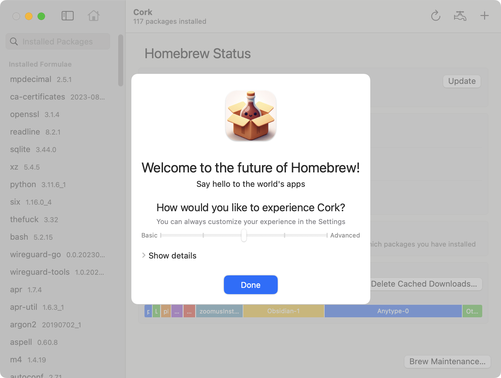

When you start up Cork for the first time, you will see the Onboarding screen. It lets you select how complex of an experience you’d like to have by sliding the slider on the Basic ↔ Advanced axis.
Click Show details to see exactly which features will be turned on and off for each complexity level
You can bring this onboarding screen up again at any time by clicking Cork in the Menu Bar, then selecting Show Onboarding….
Now that you have set Cork up, read about the User Interface, discover what you can do with Cork, or learn more about how you can customize Cork.